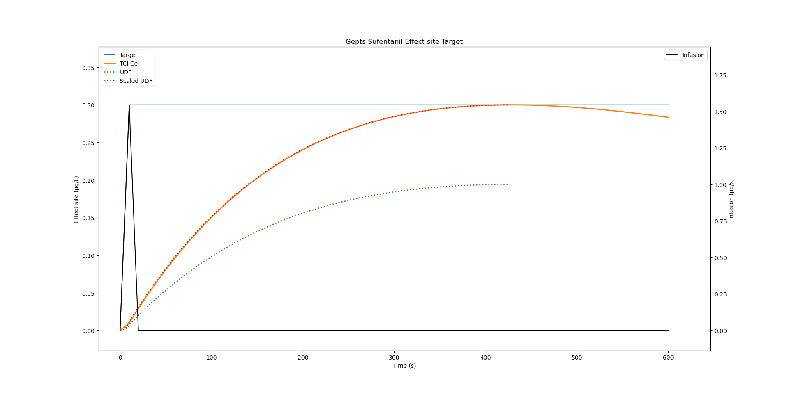

import numpy as np
import tci
# Gepts Sufentanil: 3-compartment model with effect site
gepts = tci.Parameters(
k10=0.0645,
k12=0.1086,
k13=0.0229,
k21=0.0245,
k31=0.0013,
ke0=0.112,
vc=14.3,
)STANPUMP again
In my previous blog post, I took a deep dive into STANPUMP’s source code to understand the underlying logic for Target-Controlled Infusion (TCI) and reimplemented a minimal version in Python. However, we only glimpsed over the actual core algorithm which calculates the required infusion rates to achieve target concentrations.
This post will show how the TCI algorithm works step by step, including initial bolus dosing, maintenance and target changes. The goal is to understand each step of the algorithm, an algorithm that runs every 10 seconds in operating rooms around the world.
We will reuse Python code from the ministan repository: https://framagit.org/jaj/ministan/-/tree/main/python
We will use effect site concentrations throughout but the same algorithm applies to plasma concentration targets, only the UDF changes.
The Unit Disposition Function (UDF)
The UDF is the key to TCI’s efficiency and elegance. It answers a simple question:
What happens if I infuse 1 unit/s for 10 seconds, then stop?
The UDF is pre-calculated once at the start of the case using these steps:
- Initialize: Start with empty state (all zeros)
- Simulate a unit rate infusion: Run model with rate = 1 unit/s for 10s
- Stop and observe: Set rate = 0 and continue simulation
- Find peak: Record when effect site concentration reaches its maximum
- Store trajectory: Save the concentration at each time point up to the peak
For the Gepts Sufentanil model, this calculation shows that the peak occurs at 428 seconds and is around 0.19 μg/L with 1 μg/s unit infusion. The shape of the UDF reflects the complex interplay of distribution and elimination between compartments.
The Power of Linearity
Because the pharmacokinetic system is linear, the UDF enables elegant scaling:
If you want to achieve 0.3 μg/L effect site bolus at the peak, you can follow these steps:
- UDF shows 1 μg/s -> 0.19 μg/L at peak
- Therefore you need 0.3 / 0.19 = 1.58 μg/s
- This amounts to a bolus of 15.7 μg over 10 seconds
- Formula:
rate = target / udf[peak_time]
This is the foundation of the TCI algorithm: scale the unit response to achieve any target.
After the peak, which occurs exactly at the target effect, the concentration decreases again as the drug is distributed and metabolized. The result of this simulation can be seen in Figure 1.

Implementing the TCI Algorithm
If you want to continue infusion after the initial bolus, an iterative algorithm is needed where the infusion rate is recalculated at every time step while taking into account existing state. Let’s go through the complete TCI algorithm, one step at a time.
The Pharmacometric Model
We will use the Gepts Sufentanil model again since it is convenient and has no covariates.
Convert Time Units and pre-compute System Properties
# Convert to seconds for 10-second update intervals
model_params = gepts.per_seconds()
delta_seconds = 10
# Calculate eigenvalues (hybrid rate constants)
lambdas = tci.calculate_lambdas(model_params)
# Pre-calculate UDFs and coefficients
udfs, coefs, peak_time = tci.calculate_udfs(model_params, lambdas, delta_seconds)
assert peak_time == 428 # Gepts-specific peak time
udf = np.array(udfs[1]) # Extract effect site UDFThe calculate_lambdas() function constructs the system matrix and computes its eigenvalues. Charles Minto recently wrote a comprehensive document which explains exactly how the eigenvalues are calculated in the STANPUMP code, including some very cool plots to illustrate the PKPD eigenvalues graphically. Since the time steps are in seconds, the PKPD model parameters are scaled from minutes to seconds to ease calculations.
The Main Simulation Loop
The TCI algorithm runs every 10 seconds, recalculating the infusion rate based on the current target. The 10 seconds step is a convention introduced by STANPUMP but this is a setting that can be overrided.
In this simulation, I set an intial effect site target at 0.2 μg/L. After 500 seconds it is increased to 0.3 μg/L and after 1000 seconds it is lowered to 0.1 μg/L.
# Initialize simulation state
Ce = np.zeros(4)
time = [0]
targets = [0]
rates = [0]
analytic_ce = [0]
simulation_time = 4000 # 4000 seconds total
for i in range(simulation_time // delta_seconds):
t = i * delta_seconds
# ------------------------------------------------------------------------
# Clinician sets target (simulating clinical decision-making)
# ------------------------------------------------------------------------
if t <= 500:
current_target = 0.2 # Initial induction
elif t <= 1000:
current_target = 0.3 # Increase
else:
current_target = 0.1 # Decrease
targets.append(current_target)
# ------------------------------------------------------------------------
# Calculate required infusion rate
# ------------------------------------------------------------------------
rate = calculate_rate(Ce, current_target, lambdas, udf, coefs,
peak_time, delta_seconds)
rates.append(rate)
# ------------------------------------------------------------------------
# Apply infusion and update compartments
# ------------------------------------------------------------------------
Ce = model(Ce, lambdas, coefs.e_coef, rate, delta_seconds)
time.append(t + delta_seconds)
analytic_ce.append(np.sum(Ce))The Iterative Rate Calculation Algorithm
This is where the magic happens. The goal is to find an infusion rate such that the peak effect site concentration equals the target.
Why Iteration is Necessary
Peak time is dynamic, it depends on current compartment state and infusion rate. After the initial infusion, some drug will be present in the system and the context sensitive peak time will be lower than the original peak time. Calculating infusion rate based on the original peak time will lead to overshoot. Therefore we need to find the rate and peak_time pair that satisfies our target.
The Algorithm
def calculate_rate(Ce, current_target, lambdas, udf, coefs,
peak_time, delta_seconds):
"""
Calculate infusion rate to achieve target concentration at peak.
Uses iterative algorithm to find convergence.
"""
ok_condition = False
peak_time_tmp = peak_time # Start with UDF peak as initial guess
rate_candidate = 0
while not ok_condition:
# ----------------------------------------------------------------
# Step 1: Predict concentration at estimated peak (no infusion)
# ----------------------------------------------------------------
# "Where will we be if we don't give any drug?"
# STANPUMP has a virtual_model function for this which is just
# a model function with rate fixed to 0 and additional caching
virtual = model(Ce, lambdas, coefs, rate=0, dt=peak_time_tmp)
# ----------------------------------------------------------------
# Step 2: Calculate the gap
# ----------------------------------------------------------------
gap = current_target - virtual
# ----------------------------------------------------------------
# Step 3: Calculate candidate rate using linearity
# ----------------------------------------------------------------
rate_candidate = gap / udf[peak_time_tmp]
# ----------------------------------------------------------------
# Step 4: Handle target decrease (early exit)
# ----------------------------------------------------------------
# Cannot "un-give" drug - set rate to 0 and let elimination work
if rate_candidate <= 0:
rate_candidate = 0
break
# ----------------------------------------------------------------
# Step 5: Find actual peak time with this rate
# ----------------------------------------------------------------
# Peak shifts based on current state + proposed rate
peak_time_tmp = find_peak(
peak_time_tmp, rate_candidate, Ce, peak_time,
lambdas, udf, delta_seconds
)
# ----------------------------------------------------------------
# Step 6: Recalculate at NEW peak time
# ----------------------------------------------------------------
virtual = model(Ce, lambdas, coefs, rate=0, dt=peak_time_tmp)
predicted_ce = virtual + udf[peak_time_tmp] * rate_candidate
# ----------------------------------------------------------------
# Step 7: Check convergence (STANPUMP criterion)
# ----------------------------------------------------------------
# Tolerance for simulation: 0.00001% of target
ok_condition = np.abs(predicted_ce - current_target) <= 1e-7 * current_target
# If not converged: loop repeats with updated peak_time_tmp
return rate_candidateFind Peak function
Find when effect site concentration peaks with given rate.
def find_peak(current_time, rate, Ce, peak_time, lambdas, udf, delta_seconds):
"""
Find when effect site concentration peaks with given rate.
Uses hill-climbing search.
Could probably be replaced by Brent's Method.
"""
# Calculate concentrations at three time points
current = model(Ce, lambdas, 0, rate=0, dt=current_time) + udf[current_time] * rate
earlier = model(Ce, lambdas, 0, rate=0, dt=current_time - 1) + udf[current_time - 1] * rate
later = model(Ce, lambdas, 0, rate=0, dt=current_time + 1) + udf[current_time + 1] * rate
# Search for local maximum
while current < earlier or current < later:
if current < earlier:
if current_time == delta_seconds:
return current_time
current_time -= 1
later = current
current = earlier
earlier = (model(Ce, lambdas, 0, rate=0, dt=current_time - 1) +
udf[current_time - 1] * rate)
else:
current_time += 1
earlier = current
current = later
later = (model(Ce, lambdas, 0, rate=0, dt=current_time + 1) +
udf[current_time + 1] * rate)
return current_timeCompartment Update
After calculating the rate, we need to run the model for delta_seconds to obtain our next effect site concentration.
The expensive linear algebra happened only once in the beginning of the session. The real-time algorithm is just arithmetics and array access which was fast enough to run on a 1990s microcontroller.
def model(A, lambdas, coefs, rate, dt):
"""
Update compartment amounts after infusion at given rate for time dt.
This is the discrete-time solution:
A(t+dt) = A(t)·exp(-λ·dt) + c·rate·(1 - exp(-λ·dt))
"""
decay = np.exp(-lambdas * dt)
return A * decay + coefs * rate * (1 - decay)This formula is the closed form solution of the PKPD differential equations.
Visualizing the Results
import matplotlib.pyplot as plt
fig, ax = plt.subplots()
ax2 = ax.twinx()
# Target and achieved concentrations
ax.plot(time, targets, label="Target", linewidth=2, color='red', linestyle='--')
ax.plot(time, analytic_ce, label="Achieved Ce", linewidth=2, color='blue')
ax.set_ylabel('Effect site concentration (µg/L)', color='blue')
ax.set_xlabel('Time (seconds)')
# Infusion rates
ax2.plot(time, rates, label="Infusion Rate", color='black', alpha=0.6)
ax2.set_ylabel('Infusion rate (µg/s)', color='black')
plt.title("Gepts Sufentanil Effect Site TCI Simulation")
ax.legend(loc='upper left')
ax2.legend(loc='upper right')
plt.show()
Figure 2 reveals:
- Initial bolus: High rate spike to rapidly achieve 0.2 μg/L
- Plateau phase: Low maintenance rate compensates for elimination
- Target increase: Rate spike to reach 0.3 μg/L
- Target decrease: Rate drops to zero, concentration decays naturally
- Tracking accuracy: Achieved concentration closely follows target
Acknowledgments
I’d like to acknowledge:
- Steven Shafer for creating STANPUMP and releasing it as open source
- Charles Minto for the exceptional mathematical derivation document of the eigenvalues (Looking forward to the infusion coefficient derivation!) as well as the other previous LinkedIn posts which everybody interested in TCI should check out.
- https://www.linkedin.com/posts/charlesminto_stanpump-tci-pkpd-activity-7366239144836071424-1RZl
- https://www.linkedin.com/posts/charlesminto_pkpdtools-pkpd-tci-activity-7367709588365725696-WS-w
- https://www.linkedin.com/posts/charlesminto_stanford-pharmacokinetics-tci-activity-7426118342811213824-xf2Z
Citation
BibTeX citation:
@online{joachim2026,
author = {Joachim, Jona},
title = {Unit {Disposition} {Functions} and the {TCI} Algorithm},
date = {2026-02-11},
url = {https://jaj42.github.io/blog/posts/202602_udf/index.html},
langid = {en}
}
For attribution, please cite this work as:
Joachim, Jona. 2026. “Unit Disposition Functions and the TCI
Algorithm.” February 11, 2026. https://jaj42.github.io/blog/posts/202602_udf/index.html.